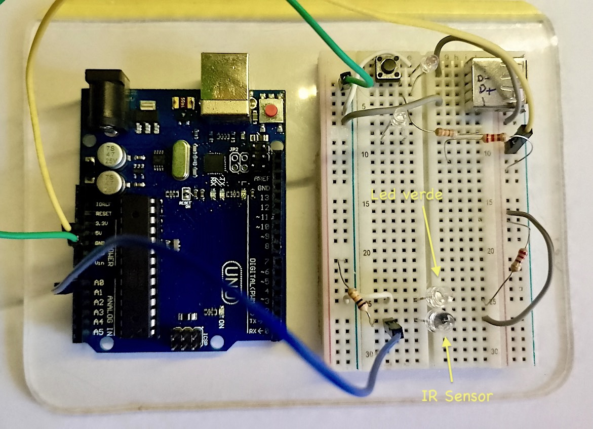
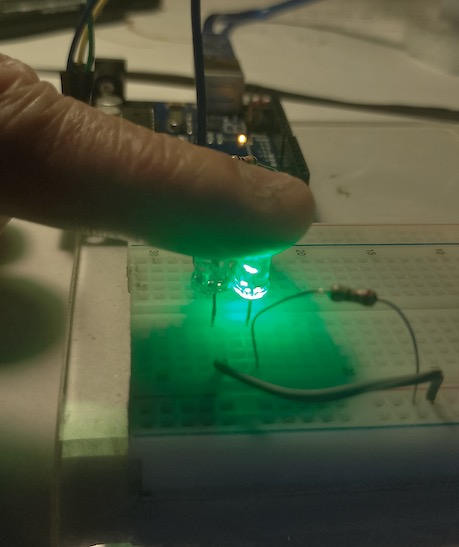
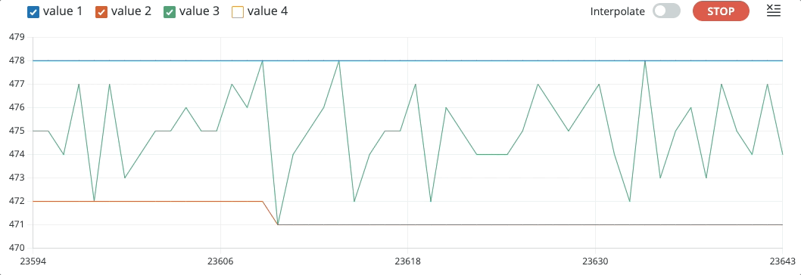
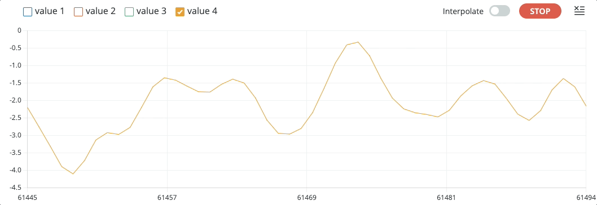
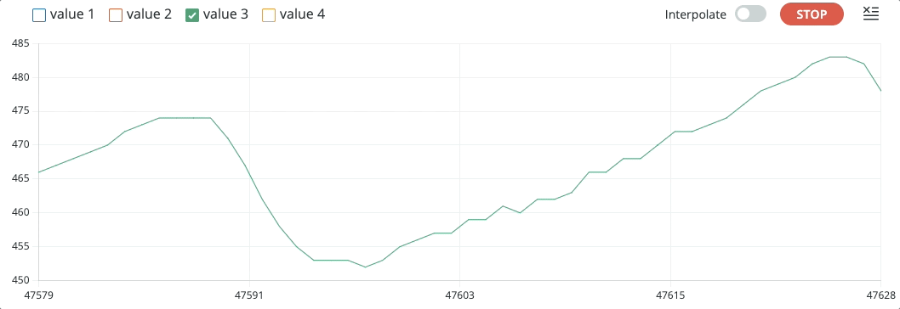
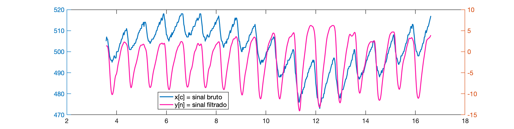
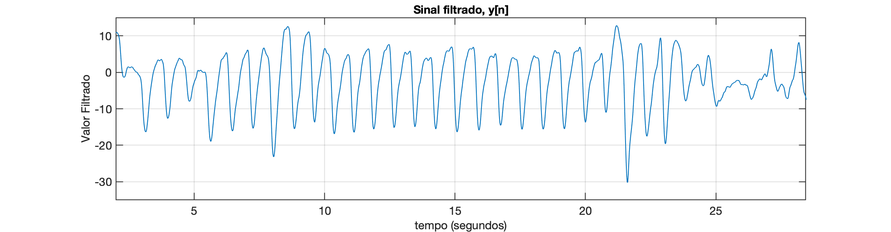

Versão 3
Sensor
Nova disposição física para o sensor:

Em uso:
| Detalhe | Em uso |
|---|---|
 |  |
Circuito
| Diagrama Elétrico | Diodo Foto-detector | Detalhe led |
|---|---|---|
 |  |  |
Obs.: Note que o foto-diodo é polarizado inversamente quando usado como sensor.
Código
Segue pulse_monitor_3.ino:
xxxxxxxxxx/* Monitor de pulsação Teste usando foto-detector Inclui: 1. Dados capturados à taxa de fs = 50 Hz (T = 0,02 segundos), usando ISR 2. Filtro passa-faixa [0,5 5] Hz @ fs = 50 Hz Fernando Passold, em 15/10/2024*/const byte analogPin = A0; // pino (A/D) que recebe sinal analógicoconst byte monitor_isr = 7; // pino 7: para monitor freq e dutty-cycle da ISR (osciloscópio)bool state = 0; // variável ativada dentro da ISR (p/monitorar ISR)int x; // dados lidos no A/D 0 do Arduínofloat y; // sinal x filtradoint x1, x2, x3, x4; // valores amostras passadas sinal de entrada xfloat y1, y2, y3, y4; // valores amostras passadas sinal de saída y (sinal filtrado)// Parâmetros do filtro (calculados usando Matlab)float b0 = 0.056448; // peso associado com x[n]float b2 = -0.1129; // peso associado com x[n-2]; o "b" para x[n-1] é nulo!float b4 = 0.056448; // peso associado com x[n-4]; o "b" para x[n-3] também é nulofloat a0 = 1; // peso para y[n] ("normalizado")float a1 = -3.1595; // peso para y[n-1]float a2 = 3.7927; // peso para y[n-2]float a3 = -2.0826; // peso para y[n-3]float a4 = 0.45045; // peso para y[n-4]void setup() { // put your setup code here, to run once: // Programando a ISR à 50 Hz usando timer 1 cli(); //stop interrupts //set timer1 interrupt at 50 Hz TCCR1A = 0; // set entire TCCR1A register to 0 TCCR1B = 0; // same for TCCR1B TCNT1 = 0; //initialize counter value to 0 // set compare match register for 1hz increments OCR1A = 1249; // = (16*10^6) / (50*256) - 1 (must be <65536) // turn on CTC mode TCCR1B |= (1 << WGM12); // Set CS12 bits for 256 prescaler TCCR1B |= (1 << CS12); // enable timer compare interrupt TIMSK1 |= (1 << OCIE1A); pinMode(monitor_isr, OUTPUT); digitalWrite(monitor_isr, LOW); Serial.begin(115200); // setup serial while (!Serial) { ; // Aguarda até que a porta serial esteja pronta - normalmente 10 ms } Serial.println(" "); Serial.println("Monitorando foto-detector: "); // inicializando amostras atrasadas sinal de entrada x1 = 0; x2 = 0; x3 = 0; x4 = 0; // inicializando amostras atrasas sinal saída filtro y1 = 0; y2 = 0; y3 = 0; y4 = 0; sei(); //allow interrupts}ISR(TIMER1_COMPA_vect) { //timer1 interrupt 1Hz toggles pin 13 (LED) digitalWrite(monitor_isr, HIGH); // Atualiza varíavel x contendo valor lido em A0 x = analogRead(analogPin); // * (5.0 / 1024.0); // converte para faixa 0 à 5 Volts // Aplicando fitro Passa-Faixa sobre sinal de entrada x // Saída filtrada em y y = b0 * (float)x + b2 * (float)x2 + b4 * (float)x4 - a1 * y1 - a2 * y2 - a3 * y3 - a4 * y4; // atualizando amostras passadas para próxima chamada da ISR y4 = y3; y3 = y2; y2 = y1; y1 = y; x4 = x3; x3 = x2; x2 = x1; x1 = x; // não é recomendável enviar dados pela serial dentro de um ISR, mas testando... Serial.print(x); // col 1 - valor bruto (int) Serial.print(" \t"); Serial.println(y); // col 2 - valor filtrado (float) digitalWrite(monitor_isr, LOW);}void loop() { // put your main code here, to run repeatedly: // Nothing to do here}Resultados
A figura abaixo mostra como fica a captura de dados SEM dedo colocado sobre o par emissor-receptor fotoelétrico:

Captura semelhante observando a saída do filtro:

O próximo gráfico compara "escalonado":

A próxima figura mostra uma sequência de captura de dados COM o dedo posicionado de forma algo estática sobre o conjunto emissor-sensor fotoelétrico:
Gráfico dos dados brutos, :

Gráfico do valor filtrado, :

A próxima figura mostra um gráfico do tipo (sinal bruto) (sinal filtrado) "escalonado" ou variável y_aux calculada da seguinte forma:
xxxxxxxxxxy_aux = 460.0 + 2.0 * y;Esta variável foi acrescentada depois ao código mostrado acima e os valores usados para "escalar" foram obtidos empiricamente observando ensaios realizados.
É possível se observar simulateamente sinal bruto (value 3) sinal filtrado (escalonado) (value 5):

Note que o filtro consegue "ignorar" adequadamente bem variações abruptas no sinal de entrada causadas por movimentação do dedo, movimento do dedo sobre sensores, etc:

Arquivos "bag"
Disponibilizando arquivos de dados capturados para testes offlines de algoritmos de filtros e detecção de picos:
- Sem dedo posicionado sobre o conjunto sensor/receptor: captura_sem_dedo.txt" (20 segundos; 14 KB)
- Com dedo posicionado sobre o conjunto sensor/receptor: captura_com_dedo.txt (30 segundos, incluindo nos últimos segundos, movimentação do dedo sobre sensor; 21 KB).
Trabalhando com os dados do último arquivo se é capaz de mostrar e ao mesmo tempo, no mesmo gráfico:

Você pode plotar os dados usando o Matlab:
xxxxxxxxxx>> dados=load('captura_sem_dedo.txt'); % lê "bag" file>> size(dados) % matriz de 923 x 2, col 1=x[x], col 2=y[n]ans = 923 2>> x=dados(:,1); % separa x[n] = dados brutos>> y=dados(:,2); % separa y[n] = sinal filtrado>> u=length(x)u = 923>> T=0.02; % período de amostragem adotado (50Hz)>> t=0:T:(u-1)*T; % sintetiza vetor tempo>> plot(t,x)Seria obtido um gráfico como:

Note como o sinal se modifica quando o dedo está sobre o sensor:

Por isto que se faz necessário passar o sinal bruto pelo filtro passa-faixa, resultado em:

Obs.: note que os 2 primeiros segundos do sinal filtrado são ignorados, o filtro ainda está no seu "regime transitório".
Os arquivos "bag" podem ser úteis para testar diferentes abordagem para pós-processamento do sinal bruto, sem necessidade de acessar novamente o hardware para realizar novos ensaios in-locco.
Resta agora detectar os picos e calcular o BPM.
Pós-processamento do sinal filtrado
Para determinar o BPM, ainda se faz necessário processar o sinal filtrado fazendo:
- Opção 1: simples deteccção de máximos consecutivos e determinaçao da distância (período) de tempo entre os mesmos. Note: BMP . Eventualmente se pode aprimorar em algo esta abordagem desonsiderando picos muito próximos. E adicionalmente ainda pode ser verificado se existe um "vale de descida" entre os picos, verificando se o sinal caiu abaixo de certo limiar antes de encontrar um novo pico. Abordagem obviamente suceptível à erros.
- Opção 2: uso de derivada, método mais robusto. A abordagem de derivadas no código de detecção de picos, considera calcular a derivada primeira (ou diferença entre amostras consecutivas; gradiente do sinal) para identificar quando o sinal está subindo ou descendo. Isso pode ajudar a garantir que um pico seja detectado apenas após uma subida e uma descida, confirmando a formação de um pico verdadeiro. Essa abordagem reduz a probabilidade de detectar picos falsos que podem ocorrer devido a ruídos ou variações rápidas no sinal.
🌊 Fernando Passold 📬 ,